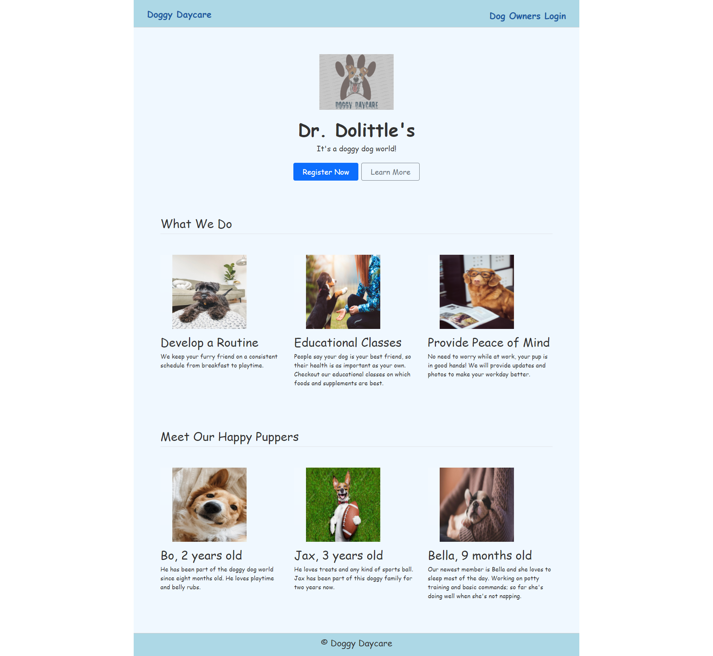
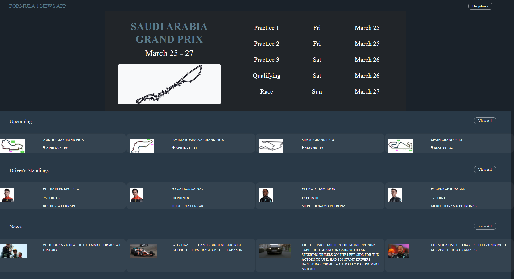
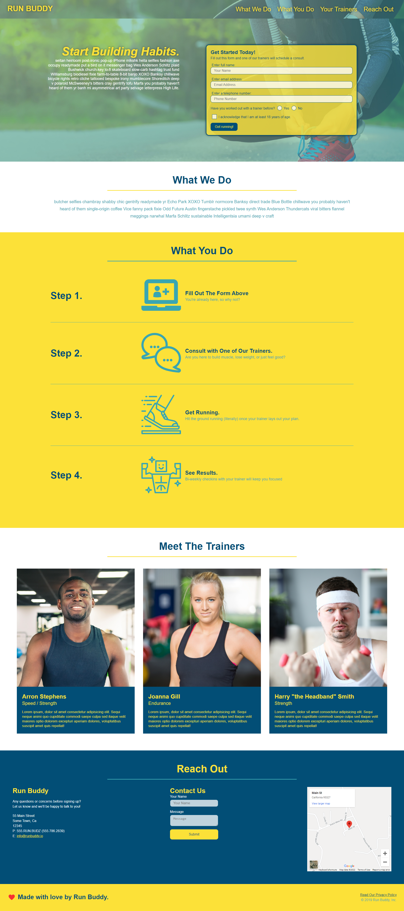
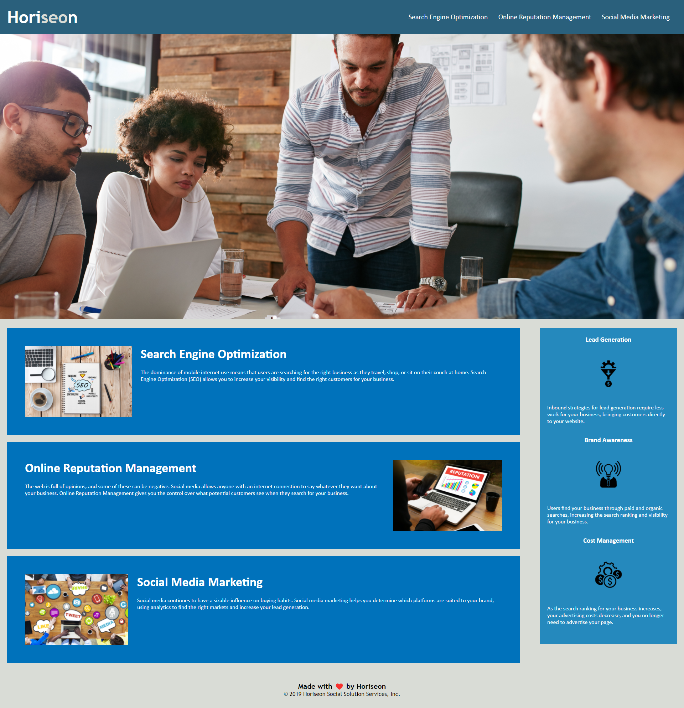
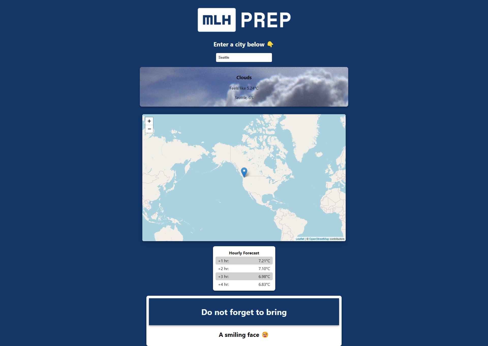
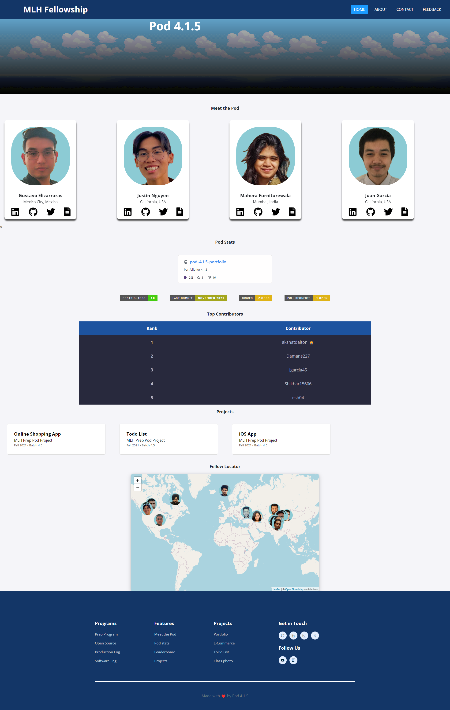
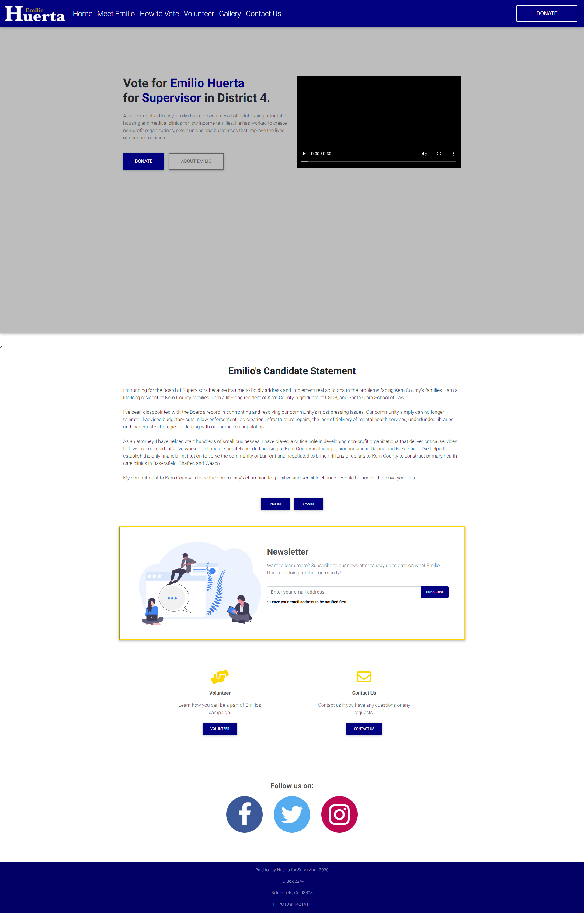

Doggy Daycare
Full-stack app for managing a dog daycare — group project.
System Analyst II & Software Engineer
I build practical, data-driven applications — currently at Kern County Department of Human Services, working in C#, ASP.NET, Blazor, and SQL.
I'm a software engineer at Kern County Department of Human Services, where I've grown from Programmer I to System Analyst II since January 2023. My day-to-day work is building and supporting internal applications — turning real operational needs into reliable tools with C#, ASP.NET, Blazor, and T-SQL, shipped through Azure DevOps.
Before that, I earned my B.S. in Computer Engineering from California State University, Bakersfield (2017) and a full-stack web development certificate from the Michigan State University Coding Bootcamp (2022), where I picked up JavaScript, React, and Node.js. I like work that's useful first and polished second: clear interfaces, honest data, and software people can actually rely on.
A few public projects, mostly from my bootcamp days — the work I do now is internal county software, so this is what's shareable.

Full-stack app for managing a dog daycare — group project.

Formula 1 info app built with a team — schedules, standings, and stats.

Fitness landing page — HTML and CSS, responsive layout.

Code refactor focused on semantics and accessibility.

MLH Fellowship prep project — collaborative open-source work.

Portfolio site built with my MLH Fellowship pod.

Portfolio site for a fellow developer.
The fastest way to reach me is email — or find me on LinkedIn and GitHub.